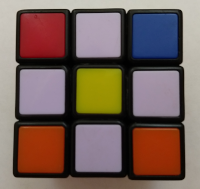

<- Back to Home
How To Solve A Rubik's Cube
There are many methods to solve a Rubik's Cube. The one that is here is
a Standard
Beginners Method.
The Standard Beginners Method has 8 main steps, Daisy, White
Cross,White Corners, Edge Pairing, Yellow Cross, Yellow Edges, Yellow
Corner Position, and the Yellow Corner Orientation. Before you learn
the steps, you need to learn how to turn the cube, this is called
notation.

This
is a notation chart. It shows the letter(s) that you use in an
algorithm (eg. Ui), and how it turns. An easy way to remember notation
is R=Right, L=Left, U=Up, D=Down, F=Front, and B=Back. If the letter is
by itself (e.g. U), that means you turn it clockwise (look at F). If it
had a i,or an ', it means counter clockwise (e.g. Fi). If there is a 2, that means to turn it twice.
Now
to start to learn! Do not get discouraged if you fail, keep trying! It
may take a little while. (If the step is allready done, go to the next
step)
Step 1: Daisy

The
First step you need to learn is the Daisy. The daisy has a yellow
center and 4 white edges around it. This is setup for the cross. The
color besides white doesn't matter on the edge. You bassicaly
just turn the cube to get the edge into the right spot. Just practice
to get the daisy.
Step 2: Cross
The
next step is to make a White Cross. When you have the daisy, you want
to put it on top, then you match the white edge on top with the correct
center(e.g. Red edge and Red center). Do that for all the edges.
Step 3: White Corners

The
next step is to put in the white corners onto the cross. You want to
put the corners below the spot you want to put it (e.g. Orange, Green,
White corner, White Cross on top). Then do the algorithem R' D' R D. Do
that a few times to get it into the spot you need. if it needs to be
oriented, do the algorithem a few more times.
Step 4: Second Layer

The
Second Layer consists of putting the edges without white or yellow into
their positions. You want to face the side with the a edge color on
that side (e.g. Green side, Green and red edge) . If your edge needs to
go clockwise, the algorithm is U R U' R' U' F' U F. If it needs to go
counter clockwise, the algorithm is U' L' U L U F U' F'.
Step 5: Yellow Cross

The
Yellow Cross is the step when you turn a yellow dot, L, or line into a
cross. Put the yellow side on top, then do the algorithm listed below.
Line:F R U R' U' F'
L(it lookes like _| ): F U R U' R' F'
Dot: L + Line
Step 6: Yellow Edges

This
step is to put the yellow edges into their correct position(you may
turn the cube to see which pattern you have). If none of the edges are
in the right spot, you want to do this algorithm with the yellow side
up R U R' U R U2 R'. If you have 2 edges in the right spot next
to each other, do R U R' U R U2 R' with the solved edges in the
back and the right sides. If you have 2 across from each other, you
want to do R U R' U R U2 R' U2, then you rotate the solved edges
to the back and the right.
Step 7: Yellow Corners Position

This
step putes the remaining corners into the right spot, but not the right
orientation (unless you are lucky and it does it for you). If none of
the corners are in the right spot (like the Orange, Yellow, and Green
corner in the image above), you want to do the algorithm U R U' L' U R'
U' L. If you have 1 corner in the right spot, do the algorithm U R U'
L' U R' U' L, with the solved corner in the right front.
Step 8: Yellow Corners Orientation
This
is the final step! The point of this step is to turn the corners so it
is solved! This step is simular to the 3rd step. You want to put the
unsolved corner into the front right corner, then do the algorithm R'
D' R D until it is in the right orientation, then do U turns until the
next incorrect edge is in the right spot (front right).
YOU DID IT! Congratulations!